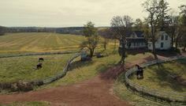
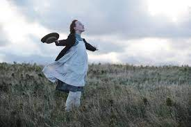

Portfólio do Terceiro Trimestre
Nome: Augusto Avozani Albrecht
Matérias: Desenvolvimento de Web e Matemática
Tema: Anne With an 'e'
Nome: Augusto Avozani Albrecht
Matérias: Desenvolvimento de Web e Matemática
Tema: Anne With an 'e'
Se quiser escutar a música de abertura da série Anne with an 'e' da Netflix, clique no play. Observação: Há uma casinha no canto inferior direito da tela que te traz de volta ao início.

Esse é meu último portfólio do ano de 2022, espero fazer muitos outros com os NOVOS(pelo amor da Mãe Natureza que eu passe de ano) conteúdos do segundo ano do ensino médio.Foram três os conteúdos abordados durante o Terceiro Trimestre, são eles:
| Conteúdo | Dificuldade |
| Logaritmos | Facilidade |
| Funções Logarítmas | Média Facilidade |
| Matemática Financeira - Juros Simples | Média Dificuldade |
| Matemática Financeira - Juros Compostos | Dificuldade |

| Acesso às Páginas | |||
O Vídeo acima é o trailer da primeira temporada de Anne with an 'e'.
Considero média baixa, pois decaí em relação aos outros trimestres, devido à muitos motivos.
Sim, realizei todas as atividades.
Sim, senti dificuldades, pois houve dias que não consegui prestar atenção devido ao cansaço físico e emocional. Procurei ajuda em alguns casos com a Júlia.
Entendo a maior parte do conteúdo na aula, porém na hora de fazer as atividades surgem alumas dúvidas que geralmente pesquiso no material ou peço ajuda para a Júlia e consigo realizar as atividades.
Eu gosto de fazer resumos e anotações no caderno usando como base o material disponibilizado.
Me considero relativaente bom em Logaritmos.
Sim, necessito prestar mais atenção, ir em mais atendimentos e na psicóloga.
Sim, eu gostei como sempre, apesar de por ser final de ano todos os prazos estão mais apertados.
Me ajudou a revisar os conteúdos de matemática, desenvolvimento de web e consegui fazer o resumo em conjunto.
Sim, a maioria dos conteúdos eu consegui aprender.
Sim, concerteza adoraria fazer portfólios nos próximos trimestres, no ano que vem, se eu passar de ano, provavelmente será mais difícil fazer os portfólios com Web, mas pretendo tentar.
Sim, pois posso acessar os conteúdos na hora necessária em casa em qualquer hora.
Não me vem nada na mente, inclusive gostei bastante de ter mais exercícios.
Assiste Anne With an 'e' Prof.
Eu pretendo me esforçar mais para prestar atenção e nas atividades, pretendo fazzer mais 6 portfólios de matemática até o ano de 2024, depois disso quero me formar né. Prof, você sem dúvida é a professora com a melhor didática que eu já conheci, muito obrigado por tudo e desculpa pelas minhas mancadas. Beijos!